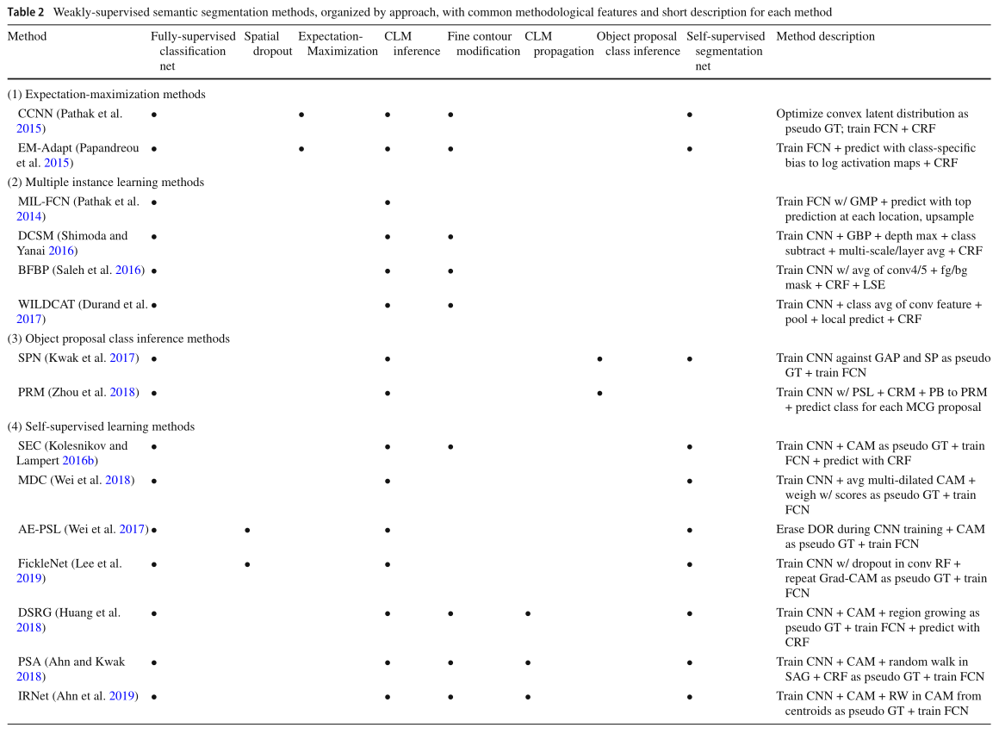

论文题目： A Comprehensive Analysis of Weakly-Supervised Semantic Segmentation in Different Image Domains
论文下载： https://link.springer.com/article/10.1007/s11263-020-01373-4
源码地址： https://github.com/lyndonchan/wsss-analysis
这是发表在 IJCV2021 上的一篇关于弱监督语义分割的综述论文，本文详细的测试了近年来几种不同图像域（自然图像，组织病理切片，卫星图像）上 sota 的弱监督语义分割方法在其他图像域上的表现，并分析了不同图像域图像的特点以及如何选取合适的弱监督语义分割方法。本篇笔记本人只关注其中的图像级弱监督语义分割问题，对于其他方法有描述不当的地方欢迎路过的大佬指正。
# Abstract
尽管只使用缺少位置信息的图像级标签进行训练，最近提出的弱监督语义分割方法还是取得了令人印象深刻的性能。由于图像级标签便宜且省时，弱监督的语义分割方法比全监督的方法更加实用。这些方法主要是为了解决自然场景图像的背景分离和部分分割问题的，目前尚不清楚它们是否可以简单的移植到其他图像领域并且仍能表现良好，如病理切片和卫星图像等。本论文评估了在自然图像、组织病理图像和卫星图像数据集上最先进的弱监督语义分割方法，并分析了如何确定哪种方法更适合某一给定的数据集。我们的实验表明，与自然场景的图像相比，组织病理学图像和卫星图像表现出一组不同的关于弱监督语义分割的问题比如模糊的边界和类共现问题等。
# Introduction
Multi-class semantic segmentation 可以完成许多工作如作为注意力机制使模型只关注相关的区域；将像素转化为更高层（具有更多语义信息）的表示如物体定位，形状，大小，纹理（texture），姿势或动作等以促进对图像的进一步分析。自然图像中的语义分割可以监测交通流量，从图像中分割人或者收集人群统计数据等。组织病理图像中的语义分割可以监测异常形状的肾组织，量化细胞大小和密度，并可以构建基于组织的图像检索系统等。卫星图像中的语义分割可以检测农田里面的杂草，洪水区域以及量化城市发展等。
尽管全监督的语义分割方法性能令人振奋，其所需要的像素级标注过于耗时费力且昂贵。弱监督的语义分割方法使用比像素级标注信息量更少的标注完成语义分割任务，大大节省了人力时间成本，从而节省了金钱成本。据统计，MS COCO 数据集的标注者为一张图像做图像级标签平均需要 4.1 秒，而为一张图像做像素级标注则需要平均 10.1 分钟，是图像级标签的 150 倍。
定性的说，使用图像级标签的弱监督语义分割方法需要仅根据一个物体是否存在来确定其在图像中的位置，目前在自然图像上的弱监督语义分割方法只用了全监督语义分割方法一部分的标注却可以得到优秀的性能。由于图像级标签完全缺少位置信息，我们总结了目前的在自然图像上的弱监督语义分割方法的困难：
- 从背景中分割出前景物体，尤其是背景中包含与前景目标有强共现性的物体时，如水和船，我们只知道图片中有船，但是大部分有船的图片都有水，因此只根据图像级标签训练的模型便无法准确地区分出船和水的边界。
- 区分强共现性物体。同上一点一样，如果两种物体频繁的共同出现，模型便很难区分出他们的边界。
- 分割出完整的物体而不是物体最值得注意（discriminative）的部分，比如我们需要分割出整个猫而不是仅仅分割出猫的头。众所周知，分类网络在优化 cross entropy loss 的时候只需要给最值得注意的区域（如猫的头）很高的激活值，该物体的其他区域完全可以不去管他，这就造成了模型很容易分割出一个物体最值得注意的部分却很难完整的分割出来整个物体。解决该问题的方法有：（1）使用具有更大感受野的模型。（2）使用擦除或空间区域 dropout 的方法使模型关注到最值得注意的区域以外的地方。（3）使用语义相似性信息将最值得注意的区域传播到物体的整个范围。
自然场景图像和组织病理图像以及卫星图像的区别：
- 自然场景图像包含更多粗粒度的视觉信息（即低类内差异和搞类间差异），而卫星图像和组织病理图像包含更多细粒度的对象（即高类内差异和高类间差异）。
- 组织病理图像和卫星图像的边界不明确，甚至专家在标注这些图像时也很难达成一致。
- 组织病理图像和卫星图像总是以相同的比例和视角成像，遮挡和光照变化最小。
这些差异使得不能盲目地将自然图像的方法用于其他图像，甚至完全不同的方法在其他图像上可能表现更好。
# Related Work
作者在这一部分介绍了三个图像域中具有代表性的数据集和弱监督语义分割方法，数据集部分我就不再赘述了，我们直接跳到方法部分。
# Weakly-Supervised Semantic Segmentation
已经提出的弱监督语义分割方法主要可以分为以下四类：Expectation-Maximization, Multiple Instance Learning, Object Proposal Class Inference, and Self-Supervised Learning.
表 2 根绝各个方法的共同特症列出了各个方法：

renal：肾